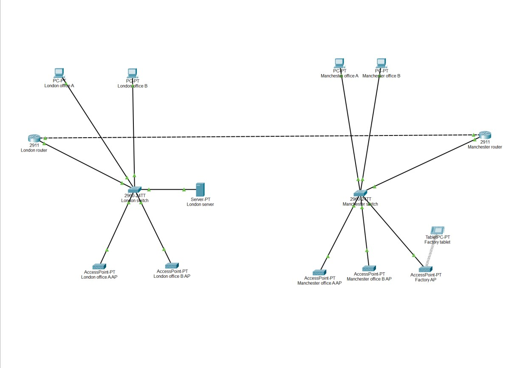

Computer science student working at the intersection of cybersecurity and AI.
I'm drawn to how AI is reshaping the world, and I want to be part of building it responsibly. Cybersecurity pulls me in for the same reason — I like problem solving, and there's nothing quite like how detailed and deliberate good cyber defence has to be.
I'm a computer science student at Manchester Metropolitan University. The unit that really hooked me was cybersecurity — the depth of thinking behind good defence is what got me interested in problem solving at that level. I'm looking forward to my AI unit this coming year, since AI and security is where I want to build my career. Currently looking for a summer placement, part-time work, or a graduate role in either space.
Algorithms & data structuresDatabasesSoftware development processesComputer architecture
Languages & tools
JavaProcessingHTMLSQLGit
Projects
Selected work
Multi-site network design — All Star Gaming

Designed, configured, and tested a secure multi-site network connecting London and Manchester offices for a fictional company, All Star Gaming.
Built in Cisco Packet Tracer using 2911 routers and 2960 switches across four offices and a factory workshop. Used VLSM and CIDR to size each subnet to its actual device count rather than a flat allocation, VLANs to separate wired, wireless, and factory traffic, and RIP v2 for dynamic routing between sites over a fibre WAN link. DHCP automated address allocation per VLAN, and SSH with local authentication secured device management in place of Telnet. Verified the design with a test suite covering DHCP allocation, inter-VLAN routing, inter-site connectivity across the WAN, and RIP route propagation — then wrote up the design's limitations (single points of failure at each site, no WAN backup) and what I'd add as the network scales.
A book store site with a working checkout flow — browse books, then pay with full client-side card validation before submission.
Built the front end in HTML/CSS with JavaScript handling the payment logic: validating card number length and prefix, checking CVV format, and catching expired cards by comparing the entered expiry against the current date — all before the details are sent to a server endpoint for processing. Handled the different failure states (invalid card, expired card, server error) with clear messages back to the user.
Group project — a movie database site where users browse films and click through to a details page.
Contributed the movie details page, which pulls film data — cast, budget, and other metadata — from a SQL-backed database through a Python/Flask back end. Front end built with HTML, CSS, and JavaScript.
A Processing game with an inverted mechanic — instead of moving the player, you nudge the obstacles away using the arrow keys while they drift toward a stationary player.
Built in Java using Processing. Obstacles move with randomised velocity and the player pushes them off-course with directional input rather than controlling their own character directly. Collision detection uses distance-based circle checks between the player and each obstacle, managed through an ArrayList so obstacles can be added or updated dynamically.